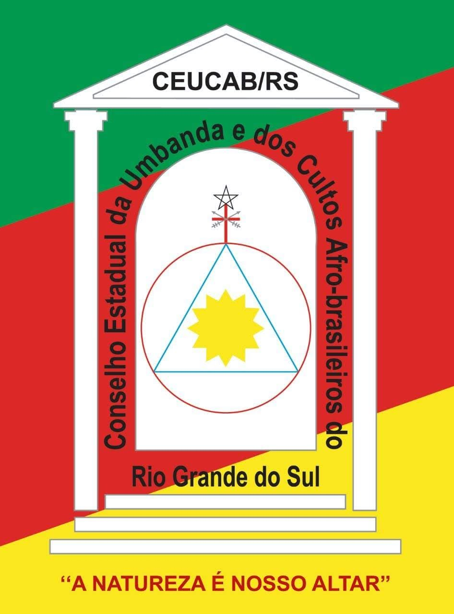

Filia-se
Seja um associado do CEUCAB/RS;
 Missão
Missão
Levar orientação aos seus filiados e divulgar a nossa raiz religiosa e a nossa bagagem cultural à sociedade brasileira.
 Visão
Visão
Ser referência de instituição religiosa que prega a igualdade e a fraternidade entre os valores humanos, consolidando posição destacada de respeito e credibilidade, perante a sociedade, mantendo participação na religiosidade que promova a vida com amor, verdade, justiça e paz, destacando a educação orientada na formação sacerdotal.
 Valores
Valores
Respeito à natureza, que é nosso altar; desenvolvimento integral de corpo, mente e espírito; coerência religiosa e responsabilidade social via solidariedade, altruísmo e voluntariado.
O CEUCAB/RS oferece:
Garanta o direito de seu sacerdócio numa federação com mais de meia década de existência. Cujo nosso objetivo é fomentar no ambiente religioso, a garantia de exercer com êxito e excelência o sacerdócio, levando orientação e conhecimento à reflexão crítica da sociedade.
- Certificação de regulamentação
- Justificação de regulamentação
- Carteirinha de associado
- Assessoria jurídica